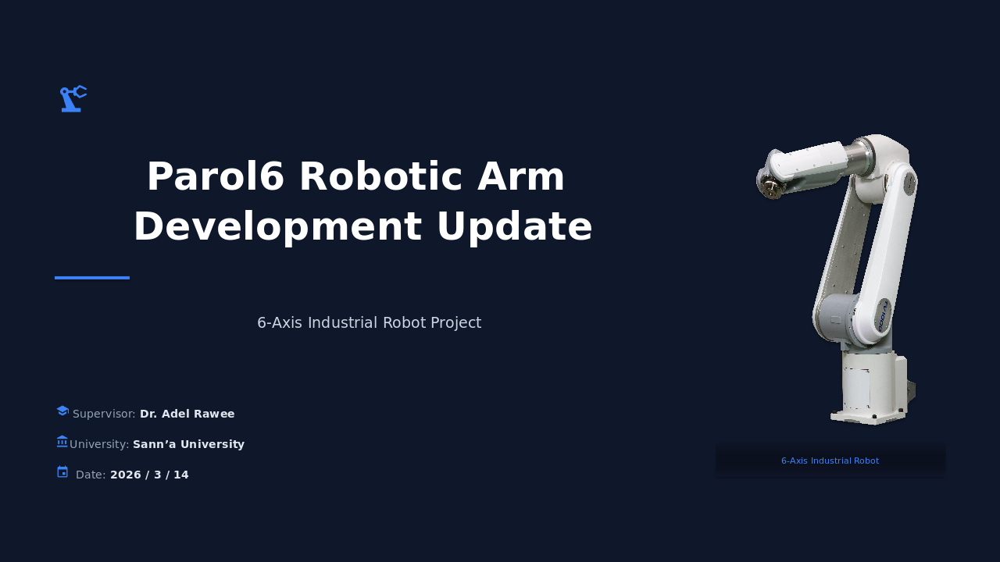

6-Axis Industrial Robot — Depth Vision Subsystem

Full intrinsic calibration at 1920×1080. Distortion coefficients measured and applied.
IR intrinsics calibrated at 512×424. Depth shift 37.67mm corrected. 1.5m focus session completed.
Color-to-IR pose calibrated. Camera TF frame tuned in RViz. Point cloud aligned to robot workspace.
Pattern: 5×7 inner corners
Square size: 30 mm
Arg: chess5x7x0.03
All calibration data persisted inside:
parol6-ultimate:latest
Pre-configured ROS2 Humble environment
kinect2_ros2 (krepa098)
OpenMP parallelization enabled · CUDA depth method
CPU registration method
| Parameter | Value |
|---|---|
| fx (focal x) | 1185.6124 |
| fy (focal y) | 1189.1865 |
| cx (principal x) | 1014.1114 |
| cy (principal y) | 590.9926 |
| k1 (radial) | 0.15018 |
| k2 (radial) | -0.11893 |
| p1 (tangential) | 0.01273 |
| p2 (tangential) | 0.00257 |
| k3 (radial) | 0.06482 |
| Parameter | Value |
|---|---|
| Depth Shift | 37.667 mm |
| Focus Distance | 1.5 m (tuned) |
| Accuracy (0.5–2m) | ±10–20 mm |
| Accuracy (2–4m) | ±20–50 mm |
| Accuracy (4–5m) | ±50–100 mm |
| Parameter | Value |
|---|---|
| fx | 365.41 |
| fy | 365.41 |
| cx | 260.41 |
| cy | 206.64 |
✅ Verified Active:
ros2 topic echo /kinect2/hd/camera_info --once returned K-matrix values matching calib_color.yaml exactly.
Custom calibration confirmed as production-active.
Interactive depth measurement tool with professional two-column sidebar UI.
Chessboard corner detection helper for verifying image quality before calibration.
Gnuplot scripts to visualize depth measurement errors across range.
plot_depth_error.gp — Gnuplot scriptplot.dat — Raw measurement data (386 KB)Depth_measurements.xlsx — Structured results
calib_color.yaml — Color intrinsicscalib_ir.yaml — IR intrinsicscalib_pose.yaml — Extrinsics (4×4)calib_depth.yaml — depthShift value
CALIBRATION_PROGRESS_REPORT.mdKINECT2_CALIBRATION_ROS2.mdkinect2_packages_detailed_analysis.md
| Topic | Description |
|---|---|
/kinect2/hd/image_color | 1920×1080 color |
/kinect2/qhd/image_color | 960×540 color |
/kinect2/sd/image_color | 512×424 color |
/kinect2/sd/image_depth | Raw depth (mm) |
/kinect2/sd/image_depth_rect | Rectified depth |
/kinect2/sd/points | Colored point cloud |
/kinect2/hd/camera_info | Calibration params |
Echoed /kinect2/hd/camera_info — K-matrix exactly matched calib_color.yaml.
Walls appear flat · edges sharp · no barrel distortion · minimal noise in stable scenes.
✓ PassedPoint cloud colors match the real scene · no ghosting or offset at boundaries.
✓ AlignedAll intrinsic, extrinsic and depth calibration stages are verified and production-active in the Docker image.